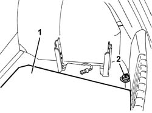
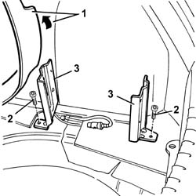
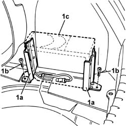

5570T89 cd player/loader/audio mount - r r
- Path
- Procedures > 55 ELECTRICAL EQUIPMENT > 5570 ACCESSORIES > 5570T car radio and car telephone > 5570T89 cd player/loader/audio mount - r r
- Kind
- repair procedure (removal / refitting; the operation number is the code)
- Applies to
- all engines; all production periods
- Interactive page
- https://sloeber94.github.io/elrnDB-a147/en/#/3025599
Applies to: all engines; all production periods
 Removing
Removing
 Refitting
Refitting5570T85 cd/audio player loader - r r
1. Remove the moveable floor cover.
2. Undo the bolt and remove the retaining ring.

Applies to: all engines; all production periods
1. Release and lift up the floor trim in the audio CD player mount area.
2. Unscrew the bolts
3. Remove the audio CD player mounts.

Applies to: all engines; all production periods
Refitting
RemovingCheck the audio CD player mounts are not damaged.
1. Position mounts (1a) of the audio CD player and secure with bolts (1b), using audio CD player (1c) as a mount positioning template.

Applies to: all engines; all production periods
Lower and fit the floor trim.
Position the retaining ring and tighten the bolt.
Fit the moveable floor trim.